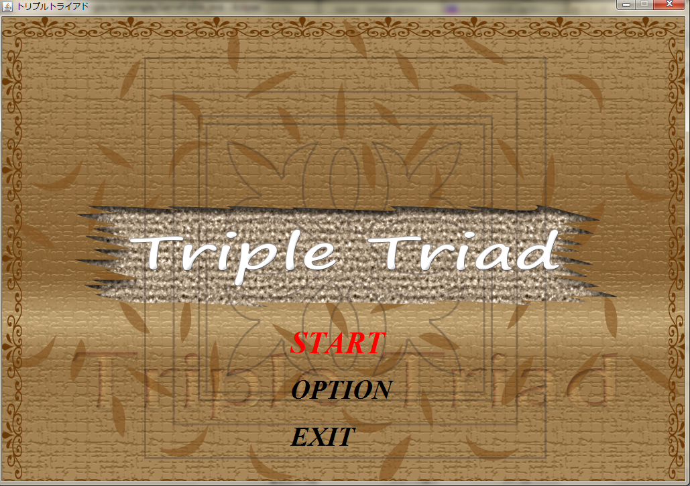
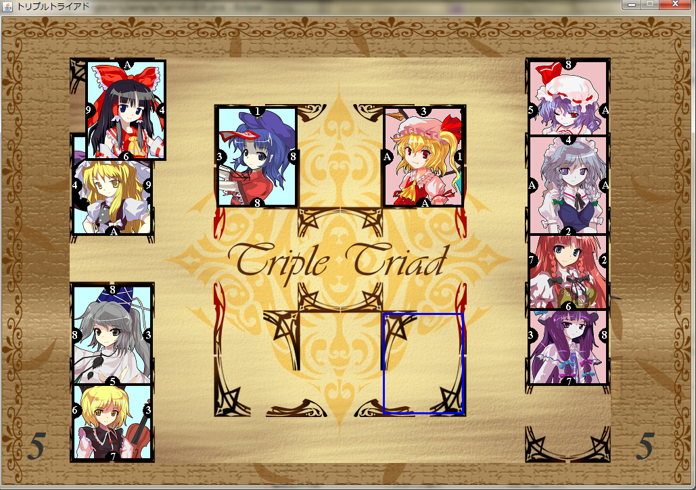

トリプルトライアド
制作者：坂本さん

画像はクリックして拡大できます
制作者からの説明&一言！
JavaでFF8のカードゲーム(トリプルトライアド)を再現すべく作成しました。
FF8はカードゲーだといわれることもあるほどカード収集によってゲームが有利に進められ，本編そっちのけでカードゲームにはまった方も多いのではないかと思います。
今回の作品では時間や技術等の不足により一部搭載できていない特殊ルールがあったり，エフェクトが貧相だったりと課題が残るものとなってしまいましたが，基本的な部分は実装できていると思います。
また，データ入力のためのアプリケーションも同時に作成したため，カード用の画像を用意すればその画像でプレイすることもできます。
数十枚の画像を用意し，それぞれのデータを入力する気力があればの話ですが…。
以下は，今回使用させて頂ている素材(敬称略)です。ありがとうございました。
〜画像〜
タイトル画面イラスト：pen（OUCRC）
プレイシートイラスト：のろ（OUCRC）
カードイラスト：幻想幽玄庵（http://gensoukyou.1000.tv/index.html）
〜音楽〜
タイトル画面BGM（U.N.オーエンは彼女なのか？ アレンジ）：よいむつ（http://gensoukyou.1000.tv/index.html）
対戦画面BGM（nineball）：Irregular-beat（http://yanagi.ash.jp/index.htm）
効果音：魔王魂（http://maoudamashii.jokersounds.com/）
2013年岡山大学祭企画TOPに戻る
OUCRC TOPに戻る